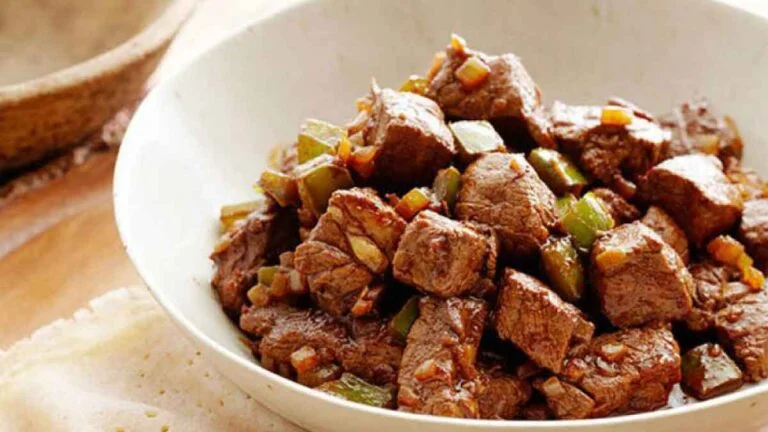

Tibs

Description
Tibs is a delectable dish originating in Ethiopia, which is made with sautéed or stir-fried diced beef or lamb, onions, garlic, peppers, and tomatoes cooked with berbere spice and niter kibbeh. This traditional dish has been served in Ethiopia for centuries and is now enjoyed around the world. Whether it is served as a main course or as part of a larger meal, Tibs provides an unforgettable experience for all who eat it.
Ingredients
- 1 lb sirloin beef (cut into 1-inch cubes and trimmed of excess fat & connective tissue)
- 2 chopped medium-sized onions
- 2 tbsp minced ginger
- 2 tbsp minced garlic
- 1 tsp lemon juice
- 1 tsp vegetable oil
- 5 tbsp niter kibbeh (Ethiopian clarified butter)
- 2 tbsp berbere
- 1 tbsp salt
Steps
- Start by melting the niter kibbeh in a large-sized saucepan with your stove set to medium heat. Then, add the garlic, ginger, and onions along with some berbere.
- Lower the heat of the stove to medium-low and continue cooking for around 30 minutes until the onions start to darken, while occasionally stirring.
- When the onions get to a low sizzle, move them to a food processor and blend them well, but don’t let them turn into a purée.
- Then return them to the saucepan, add some salt, and keep them warm.
- Next, bring your sirloin beef, trim it of excess fat & connective tissues, cut it into small 1-ich cubes, and add some salt to all sides of the beef cubes.
- Heat a large-sized cast-iron skillet or pan at high heat with some oil, until it gets lightly smoky.
- Add the beef cubes to the pan in a single layer and plenty of space in the pan itself. If there is not enough space to add the beef cubes this way, feel free to do so in batches.
- Then cook without moving the beef cubes so that they are seared well on one side. Do this for 3 minutes and flip the beef cubes over and cook the other side the same way.
- Continue cooking the beef cubes, occasionally flipping and stirring them until the beef cubes are cooked to your liking.
- Finally, move the beef cubes to the saucepan you were keeping warm with the onion sauce in it, add the lemon juice, and mix together gently but also thoroughly. Serve your Tibs while still hot.